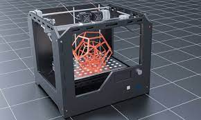
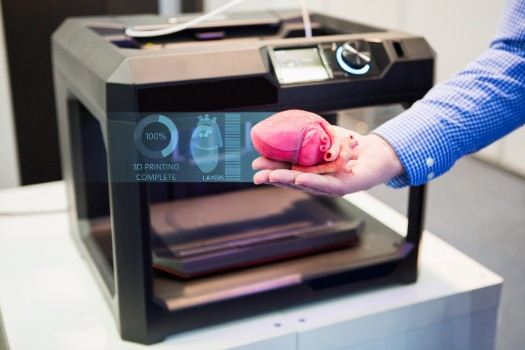
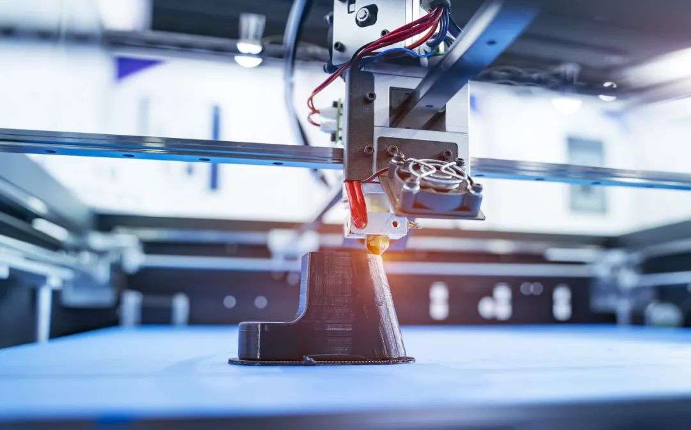

3Dプリンティング
53Dプリンティング
アディティブ・マニュファクチャリングとも呼ばれる3Dプリンティングは、1980年代に始まった新しいタイプの製造方法で、30年以上の開発期間を経て技術はより成熟し、航空宇宙、軍事、医療などの分野や、私たちの生活に密着した文化的、創造的な分野で広く利用されている。 3Dプリンティング技術は、伝統的な産業の産業モデルを大きく変え、伝統的な製造業からインテリジェントな製造業への行進を実現するでしょう。 第三次産業革命の代表的な技術として、投資家の間でも3Dプリンティング技術への注目が高まっている。
軍 事
3D印刷は、製造の簡素化、サプライチェーンと流通チェーンの短縮、生産の民主化、雇用の創出と本国送還、ユーザーの特定のニーズに応じた製品のカスタマイズによって、世界を変える可能性を秘めています。


医 療
現在知られているプロジェクトでは、ハイテクで安価なプロテーゼなどの3D印刷脊椎骨などの人体の一部を印刷し、3D印刷の人間の脳、3D印刷の人間の心臓の一部を印刷することが可能でした。 NS...

将来の開発
将来的には、3D印刷技術のアプリケーションは、単純な概念モデルから機能コンポーネントの直接製造へと進化しました。 たとえば、生物医学の分野では、3Dプリントは「非生体」印刷から「生体」印刷へと徐々に進歩しています。
©2021 - GROUP8